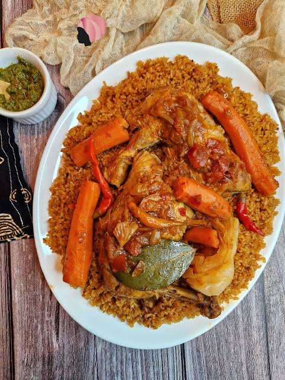

Recettes de tchep djen

Description
Le Thiéboudienne (ou Tchép djen, de Wolof ceebu jën signifiant « riz au poisson ») est le plat national emblématique du Sénégal, également reconnu au patrimoine culturel immatériel de l'UNESCO.
Il se compose de poisson frais stuffing à la farce d'herbes (rof), de légumes variés (chou, carotte, navet, aubergine, gombo) et de riz délicatement mijotés dans un bouillon rouge richement assaisonné à base de concentré de tomate, d'oignons et d'épices.
ingrédients
- Poisson frais (ex: mérou, thiof ou capitaine)
- Riz (de préférence riz brisé)
- Ingrédients pour la farce (rof) : persil, ail, piment, poivre, sel
- Concentré de tomate et tomates fraîches
- Oignons et gousses d'ail
- Légumes au choix : chou blanc, carottes, navets, aubergines, gombo, manioc
- Huile de cuisson
- Assaisonnements : piment entier, poivre, bouillon ou condiments locaux (netetou, yete)
Étapes
- Préparer le rof en pilant le persil, l'ail, le piment, le sel et le poivre, puis piquer et farder le poisson avec ce mélange.
- Faire frire le poisson dans de l'huile chaude dans une grande marmite, puis le retirer et le réserver.
- Faire revenir les oignons hachés dans la même huile, puis ajouter le concentré de tomate dilué pour former une base de sauce rouge.
- Mouiller avec de l'eau, ajouter les légumes et les condiments, puis laisser mijoter jusqu'à ce que les légumes soient tendres.
- Retirer les légumes et un peu de bouillon de la marmite dès qu'ils sont cuits, puis remettre brièvement le poisson pour qu'il s'imprègne de la sauce avant de le retirer également.
- Laver et précuire le riz à la vapeur.
- Plonger le riz dans le bouillon restant dans la marmite, réduire le feu, couvrir hermétiquement et laisser cuire à petit feu jusqu'à absorption complète du liquide.
- Dresser le riz cuit dans un grand plat, puis disposer harmonieusement le poisson et les légumes sur le dessus avant de servir chaud.
Accueil